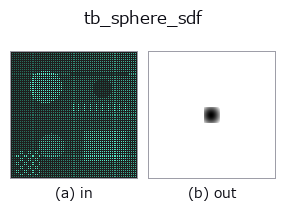
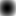

typed op• 数据种类:points → volume
• 调用:fullseye.apply(img, "tb_sphere_sdf", a=0.5, b=0.5)(2-D 的模型是一张图 + 两个标量旋钮 a,b∈[0,1])

*图为在 128×128 合成输入上实际运行的输出。左为输入，右为输出。点云以俯视散点显示(亮度 = z)，一维序列为折线，体数据为沿 z 的最大值投影，视频为中间帧，复数图像为幅值；无法成像的返回值直接显示数值。*
*旋钮 a 不改变输出(实测: 0.1 / 0.5 / 0.9 相同)。*
*旋钮 b 不改变输出(实测: 0.1 / 0.5 / 0.9 相同)。*
阶段(前置算子 → 本算子，从左到右):
▸ tb_sphere_sdf: 处理阶段 (文档网站)
换别的图像(合成场景 / 照片 / 硬币。上排为输入，下排为对应输出。旋钮取默认):
▸ tb_sphere_sdf: 其他输入图像 (文档网站)
动态(GIF: 依次显示帧 / 视点 / 切片。静态图是完整版，GIF 为辅助):

球体的有符号距离场: |p - center| - R(内部为负,外部为正)。
grid 是最后一轴为 3 的坐标数组 (..., 3)(grid_coords 的输出或 (N,3) 点云)。center 长度为 3，R>=0 为半径。返回值的 shape 为 grid.shape[:-1]。精确的 SDF (梯度范数为 1)。sdf_offset(sphere_sdf(g,c,R), r) == sphere_sdf(g,c,R+r)。
R < 0 或 grid / center 形状不正确时抛出 ValueError。
计算：np.linalg.norm(grid - center, axis=-1) - R。坐标单位直接成为距离的单位(传入 grid_coords 的 world 坐标则为 world 单位)。坐标分量顺序为 grid 最后一轴的顺序(grid_coords 时为 (x, y, z))，center 也用相同顺序。
参数与校验(ValueError)：
• grid：最后一轴为 3 的 float 数组 (..., 3)(也可为 1-D 的 (3,)。0-D 或最后一轴不是 3 时拒绝)。
• center：元素数为 3(无法 reshape(3) 时为 numpy 的 ValueError)。
• R：可 float() 的标量。传入旋转矩阵等时也为 ValueError (此参数是半径而非位姿)。R < 0 拒绝，R = 0 即到中心的距离场本身。
返回值：grid.shape[:-1] 的 float64(grid_coords 的输出时为 (nx, ny, nz))。中心处为 -R，表面为 0，外侧为正。
用法：用 grid_coords 生成网格 → sphere_sdf / box_sdf → 用 sdf_union / sdf_subtract 做 CSG → 以 <= 0 为占据做 marching cubes(向 voxel_to_mesh 传入 -sdf，取相当于 iso=0 的等值面)。
桥接到 2-D 进化注册表的 3d op sphere_sdf。实现相同，只是调用约定改为 op(v, a, b)。此 op 没有可调参数，a 和 b 都不使用。
• 示例数据目录(下载 URL / 许可证) —— 2-D 用 skimage.data(BSD/公有领域)加合成图,3-D 给出真实数据源(Stanford/PDS 等)的下载 URL。
• 算子来历与参考文献 —— 该算子族所依据的研究/方法出处。
下面的程序已确认可以运行(与图相同的输入)。在 Studio 帮助中，此块会变成按钮，可当场加载并运行。
img_to_points 0.50 0.50 tb_sphere_sdf 0.50 0.50
下面的示例调用的是底层账本算子 sphere_sdf。此桥接算子只是把同一实现适配为 fn(v, a, b) 约定，行为完全相同(只是调用形式不同)。
• annotate3d_figure — py -3.11 examples_3d/annotate3d_figure.py
• gear_metrology — py -3.11 examples_3d/gear_metrology.py
• molecule_atom_count — py -3.11 examples_3d/molecule_atom_count.py
• procedural_hand — py -3.11 examples_3d/procedural_hand.py
• render_beauty — py -3.11 examples_3d/render_beauty.py
• sdf_csg — py -3.11 examples_3d/sdf_csg.py
• sfm_recon — py -3.11 examples_3d/sfm_recon.py
volume 作为输入)identity · vol_gaussian · vol_median · vol_erode · vol_dilate · vol_threshold · vol_reg_dilate · vol_reg_erode
typed)tb_points_to_voxel · tb_estimate_point_normals · tb_iss_keypoints · tb_project_points · tb_render_point_depth · tb_statistical_outlier_removal · tb_radius_outlier_removal · tb_voxel_grid_downsample
*Provenance: ops.py — 2D 算子登记表。本条目由 tools/opdocs.py md 自动生成(请勿手工编辑)。*
© 2026 Kazufumi Furuse — Fullseye operator documentation. Licensed under Apache-2.0.